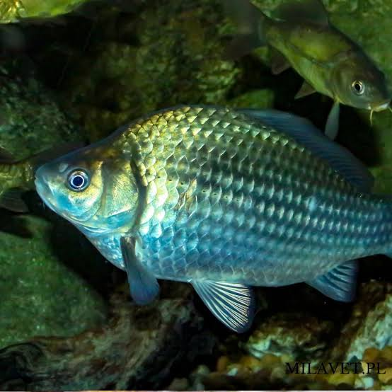

🐟 Karaś
Karaś to popularna ryba występująca w stawach, jeziorach i wolno płynących wodach. Jest dobrym gatunkiem dla początkujących wędkarzy.
📋 Podstawowe informacje
📏
Rozmiar
Zwykle 15–30 cm
⚖️
Waga
Najczęściej do około 1 kg
🌊
Występowanie
Stawy, jeziora i spokojne wody
⭐
Trudność
Łatwa
🎣 Jak złowić karasia?
🪱 Przynęta
Dobrym wyborem jest robak, kukurydza albo mała przynęta roślinna.
📍 Gdzie szukać?
Szukaj go w spokojnych, płytkich miejscach, szczególnie w pobliżu roślinności.
☀️ Kiedy łowić?
Karaś jest aktywny głównie w cieplejszych miesiącach.